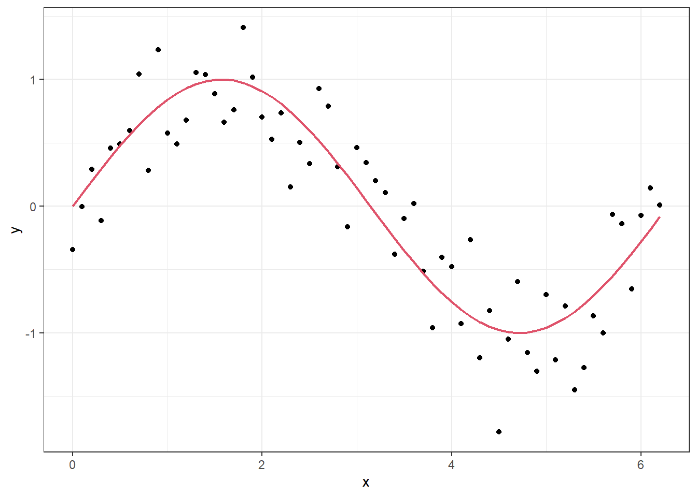
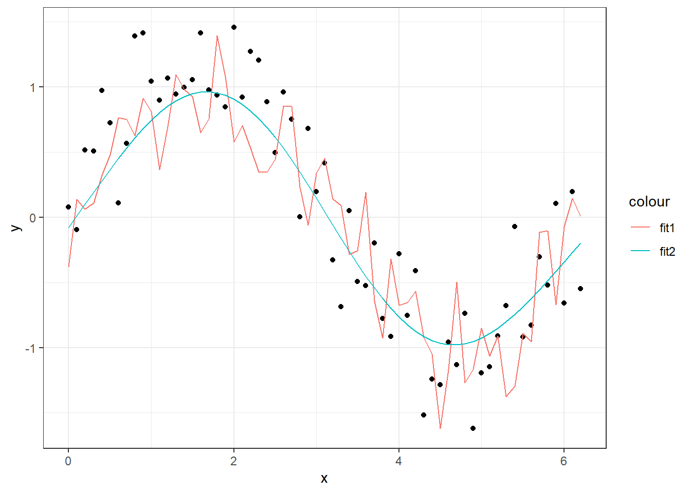

2 Over-fitting and model tuning, selection and evaluation and multiple regression
In this lecture we will cover the terms overfitting, training-, validation- and test sets, model selection and -evaluation. These terms are part of the chargong of predictive modelling and is something we need to get familiar with before learning about specific models. Towards the end of this lecture, we will learn about multiple regression.
2.1 Overfitting
Overfitting is the phenomenon when you build a model that fits (almost) “perfectly” to the training set, but when applied to new data the performance is low. For the modeller there is a balance between choosing a model that has a good fit to the training data, but also generalize well to new data. The goal for the model should be to discover the underlying signal and not fit to all the noise.
We will illustrate overfitting by an example with simulated data and GAM models (topic for the lecture Lecture 3)
set.seed(3)
x <- seq(0,2*pi,0.1)
z <- sin(x)
y <- z + rnorm(mean=0, sd=0.5*sd(z), n=length(x))
df <- cbind.data.frame(x,y,z)
p <- ggplot(df, aes(x = x, y = y)) + geom_point() + geom_line(aes(y=z), lwd = .8, col = 2)
p
In the figure above, the “true” underlying signal is the red curve while the black dots are the observations. If we fit a model with a high level of flexibility, we can make it fit well to the observations.
p + geom_smooth(method = "gam", formula = y ~ s(x,k = 50, sp = 0))We will come back to the details of the model setup when discussing GAM models in the next lecture, but the point here is that we have “turned off” the likelihood penalization by setting sp=0 in the smoother function s and set the order of the smoother to a high number (k = 50). If we set the order to k = 4 and let the GAM procedure set the penalization itself, we get a much smoother curve that lies closer to the true signal.
p + geom_smooth(method = "gam", formula = y ~ s(x,k = 4))The first model explains 96.3% of the deviance, while the second explains 81.7%.
In a normal situation, we would of course not know the true underlying signal, but overfitting can be suspected when you get such a wiggly prediction curve that seems to follow every little move in the observations. Judging by the fit to the points, the first GAM model is much closer to the observations, but we can check how well it would perform on a new set of data with the same structure.
library(mgcv) # package for fitting gam models
# Fit model with high level of complexity:
fit1 <- gam(y ~ s(x, k= 50, sp = 0), data = df)
summary(fit1)##
## Family: gaussian
## Link function: identity
##
## Formula:
## y ~ s(x, k = 50, sp = 0)
##
## Parametric coefficients:
## Estimate Std. Error t value Pr(>|t|)
## (Intercept) -0.02501 0.04060 -0.616 0.549
##
## Approximate significance of smooth terms:
## edf Ref.df F p-value
## s(x) 49 49 6.895 0.000262 ***
## ---
## Signif. codes: 0 '***' 0.001 '**' 0.01 '*' 0.05 '.' 0.1 ' ' 1
##
## R-sq.(adj) = 0.823 Deviance explained = 96.3%
## GCV = 0.50314 Scale est. = 0.10382 n = 63# Fit simpler model:
fit2 <- gam(y ~ s(x, k= 4), data = df)
summary(fit2)##
## Family: gaussian
## Link function: identity
##
## Formula:
## y ~ s(x, k = 4)
##
## Parametric coefficients:
## Estimate Std. Error t value Pr(>|t|)
## (Intercept) -0.02501 0.04238 -0.59 0.557
##
## Approximate significance of smooth terms:
## edf Ref.df F p-value
## s(x) 2.988 3 87.32 <2e-16 ***
## ---
## Signif. codes: 0 '***' 0.001 '**' 0.01 '*' 0.05 '.' 0.1 ' ' 1
##
## R-sq.(adj) = 0.807 Deviance explained = 81.7%
## GCV = 0.12081 Scale est. = 0.11317 n = 63# simulate new set of data:
set.seed(4)
newdata <- data.frame(x, z,
y = z+rnorm(mean=0, sd=0.5*sd(z), n=length(x)))
# Make predictions from the two models:
newdata$pred1 <- predict(fit1, newdata=newdata)
newdata$pred2 <- predict(fit2, newdata=newdata)
# Calculate sum of squared residuals:
with(newdata,
c("SS1" = sum((y-pred1)^2),
"SS2" = sum((y-pred2)^2)))## SS1 SS2
## 14.160736 7.734603As you can see, the sum of squared residuals is almost twice as high for the complex model when applied to new observations, compared to the simpler model. In a preditive modelling situation, it is the prediction performance that is important and not as much the deviance explained on training data. Below is a figure with the two predicition curves on the new data. Since \(x\) is the only input to the models, the two lines are equal to the curves above, but the data is new.
# Plot the new data:
ggplot(data= newdata, aes(x=x,y=y)) + geom_point() +
geom_line(aes(y=pred1, col = "fit1"))+
geom_line(aes(y=pred2, col = "fit2"))
2.2 Training, validation and test split
In order to evaluate a predictive model’s performance, we should test its predictive abilities on data the model has never seen before (during model fitting). Usually, you only have one dataset to start with, so it is common to split the original data into three subsets; a training set, a validation set and a test set.
The training set is the data used to “train” the model, meaning estimating its parameters. If your original data is split, this will typically be the biggest portion of the data. One should measure the model performance on the training data, but this should not be used solely for model selection. If your model has a very good fit to the training data, this can often lead to overfitting issues when applying the model to new data. This is one of the reasons for using a validation set.
The validation set is used for tackling overfitting and doing model selection. This is a smaller portion of the data not seen during training, which is key. We can therefore measure the models performance on these unseen data and if the model performs similarly as on the traning data, this means it generalizes well to new situations and overfitting is likely not a big issue. If the performance is high in training and low for validation, this is a sign of overfitting. If you are in a scenario where you have many different candidate models, either from different model families or the same model but with different setups, you can use the validation set to select “the best” model according to the performance criteria you have chosen.
Once you have found a model that does not overfit to training data and performs well on the validation set, you can apply it to the test set. This should only be used to measure the models performance. In some cases, one sees modellers only splitting the data in two, a training and testing set. If you use the validation set to measure the models performance, this will give a biased estimate of model performance, since you have selected the model based on the validation set. Basically, you will not know whether your model performs better because of changes you made or because it just happened to fit the validation set better. Therefore, we need a separate test set. The performance on the test set should ideally be similar to the performance on the validation set. If it is significantly lower, this can indicate overfitting to the validation set.
Figure2.1: Summary of the three-way data split.
We will illustrate how this three-way split can be used on an example, after we have learned about multiple regression.
2.3 Multiple regression
Multiple regression is an extension of simple linear regression, where more than one covariate is used to predict the value of the dependent variable (the Y). The form of the predictor is a linear combination of the set of explanatory variables, i.e. \[\widehat Y_i = \beta_0 + \beta_1X_{i1} + \ldots + \beta_p X_{ip},\quad i=1,\ldots,n,\] where \(\widehat Y_i\) is the predictor of observation \(i\), \(\beta_0, \ldots, \beta_p\) are the parameters and \(X_{\cdot 1}, \ldots, X_{\cdot p}\) are the vectors of explanatory variables. It is quite common to write the equation above on vector form. Define the vectors \(\widehat{\mathbf{Y}}=(\widehat Y_1, \ldots, \widehat Y_n)'\) and \(\boldsymbol{\beta} = (\beta_0, \ldots, \beta_p)'\), and the design matrix \(\mathbb X = (\mathbf{1}, \mathbf X_{\cdot 1},\ldots, \mathbf X_{\cdot p})\). Then the equation above can be written as
\[\widehat{\mathbf{Y}} = \mathbb X\,\boldsymbol\beta.\]
The assumptions are that the residuals, \(Z_i = Y_i - \widehat Y_i\), \(i=1,\ldots, n\) are independent and normally distributed. The explanatory variables should not be correlated. Parameters are estimated using maximum likelihood estimation. Note that we are using capital letters here. This is a statistical convention when we are talking about variables. Once we introduce observations, we switch to small letters for the same quantities.
To learn more about multiple regression, take the datacamp course Multiple and Logistic Regression in R. For now you can focus on the multiple regression part. We will simply go on to illustrate usage by an example.
2.3.1 Example
In this example, we consider a dataset containing the impact of three advertising medias (youtube, facebook and newspaper) on sales for different companies. The advertising budgets and sales are in thousands of dollars and the advertising experiment has been repeated 200 times. We will use multiple regression to model the relationship between sales and the advertising budgets from the different medias. In the video below we walk you through the example, but you can also read it below.
We start by looking at the data:
# load data:
data("marketing", package = "datarium")
head(marketing)## youtube facebook newspaper sales
## 1 276.12 45.36 83.04 26.52
## 2 53.40 47.16 54.12 12.48
## 3 20.64 55.08 83.16 11.16
## 4 181.80 49.56 70.20 22.20
## 5 216.96 12.96 70.08 15.48
## 6 10.44 58.68 90.00 8.64plot(marketing)From looking at the plot above, it does not seem to be a very strong correlation between the three covariates: youtube, facebook and newspaper. This is based on that the first 3x3 scatters plots seem to be randomly distributed without any clear patterns. Looking at the last row of panels we see the marginal relationships between the covariates and the response; sales. Here it looks like the marginal relationship between youtube and facebook variables is close to linear, while for newspaper it does not look like a linear relationship is well suited. We will therefore use facebook and youtube to predict sales. We will also check if including newspaper can improve the fit.
We create a train and a test set, by doing a 80-20 random split (80% for training set - 20% test set):
set.seed(123)
train.ind <- sample(1:nrow(marketing), nrow(marketing)*.8, replace = FALSE)
trainset <- marketing[train.ind, ]
testset <- marketing[-train.ind, ]We start by fitting the following model:
\[\mathrm{sales} = \beta_0 + \beta_1\cdot \mathrm{youtube} + \beta_2\cdot \mathrm{facebook}+\beta_3\cdot \mathrm{youtube}\cdot\mathrm{facebook}\] This model can be set up by different formula arguments in R. The different model calls below are equivalent.
mod1 <- lm(sales ~ youtube + facebook + youtube:facebook, data = trainset)
summary(mod1)##
## Call:
## lm(formula = sales ~ youtube + facebook + youtube:facebook, data = trainset)
##
## Residuals:
## Min 1Q Median 3Q Max
## -7.4636 -0.4788 0.2331 0.7317 1.7508
##
## Coefficients:
## Estimate Std. Error t value Pr(>|t|)
## (Intercept) 8.077e+00 3.375e-01 23.929 < 2e-16 ***
## youtube 1.914e-02 1.702e-03 11.248 < 2e-16 ***
## facebook 2.639e-02 1.003e-02 2.631 0.00937 **
## youtube:facebook 9.187e-04 4.956e-05 18.536 < 2e-16 ***
## ---
## Signif. codes: 0 '***' 0.001 '**' 0.01 '*' 0.05 '.' 0.1 ' ' 1
##
## Residual standard error: 1.174 on 156 degrees of freedom
## Multiple R-squared: 0.9655, Adjusted R-squared: 0.9649
## F-statistic: 1457 on 3 and 156 DF, p-value: < 2.2e-16mod1 <- lm(sales ~ 1 + youtube + facebook + youtube:facebook, data = trainset)
summary(mod1)##
## Call:
## lm(formula = sales ~ 1 + youtube + facebook + youtube:facebook,
## data = trainset)
##
## Residuals:
## Min 1Q Median 3Q Max
## -7.4636 -0.4788 0.2331 0.7317 1.7508
##
## Coefficients:
## Estimate Std. Error t value Pr(>|t|)
## (Intercept) 8.077e+00 3.375e-01 23.929 < 2e-16 ***
## youtube 1.914e-02 1.702e-03 11.248 < 2e-16 ***
## facebook 2.639e-02 1.003e-02 2.631 0.00937 **
## youtube:facebook 9.187e-04 4.956e-05 18.536 < 2e-16 ***
## ---
## Signif. codes: 0 '***' 0.001 '**' 0.01 '*' 0.05 '.' 0.1 ' ' 1
##
## Residual standard error: 1.174 on 156 degrees of freedom
## Multiple R-squared: 0.9655, Adjusted R-squared: 0.9649
## F-statistic: 1457 on 3 and 156 DF, p-value: < 2.2e-16mod1 <- lm(sales ~ youtube * facebook, data = trainset)
summary(mod1)##
## Call:
## lm(formula = sales ~ youtube * facebook, data = trainset)
##
## Residuals:
## Min 1Q Median 3Q Max
## -7.4636 -0.4788 0.2331 0.7317 1.7508
##
## Coefficients:
## Estimate Std. Error t value Pr(>|t|)
## (Intercept) 8.077e+00 3.375e-01 23.929 < 2e-16 ***
## youtube 1.914e-02 1.702e-03 11.248 < 2e-16 ***
## facebook 2.639e-02 1.003e-02 2.631 0.00937 **
## youtube:facebook 9.187e-04 4.956e-05 18.536 < 2e-16 ***
## ---
## Signif. codes: 0 '***' 0.001 '**' 0.01 '*' 0.05 '.' 0.1 ' ' 1
##
## Residual standard error: 1.174 on 156 degrees of freedom
## Multiple R-squared: 0.9655, Adjusted R-squared: 0.9649
## F-statistic: 1457 on 3 and 156 DF, p-value: < 2.2e-16As you can see from the outputs, all models are equivalent. If you want to learn more about setting the formula argument, check out the helpsite for the formula function:
?stats::formulaWe will choose the model that has the highest predictive ability. We will therefore suggest several models and choose the one that has the lowest value of Akaike’s information criteria (AIC). We will also evaluate the different models on the test set.
mod2 <- lm(sales ~ youtube * facebook * newspaper, data = trainset)
mod3 <- lm(sales ~ youtube * facebook + newspaper, data = trainset)
mod4 <- lm(sales ~ youtube, data = trainset)
mod5 <- lm(sales ~ facebook, data = trainset)
mod6 <- lm(sales ~ newspaper, data = trainset)
AIC(mod1, mod2, mod3, mod4, mod5, mod6)## df AIC
## mod1 5 511.4668
## mod2 9 517.5961
## mod3 6 512.9814
## mod4 3 894.2953
## mod5 3 986.9928
## mod6 3 1043.6815We choose the model with lowest AIC value. As you can see from the output above, this is the model we named mod1. Adding newspaper as covariate will provide the model with more information, but the cost of adding more parameters to be estimated is deemed higher than the benefit of including this information in the model according to AIC.
We can also use the predictive abilities of the models on the test set to choose model. We will restrict ourselves to the top three model based on AIC and use root mean square error (RMSE) to assess the quality of the predictions. First we evaluate the in-sample prediction. That is, we calculate predictions on the training set and summarize by RMSE.
trainset %>%
bind_cols(
mod1 = predict(mod1, newdata = trainset),
mod2 = predict(mod2, newdata = trainset),
mod3 = predict(mod3, newdata = trainset)
) %>%
pivot_longer(cols = 5:7, names_to = "models", values_to = "pred") %>%
group_by(models) %>%
summarize(RMSE = sqrt(mean((sales-pred)^2)))## # A tibble: 3 x 2
## models RMSE
## <chr> <dbl>
## 1 mod1 1.16
## 2 mod2 1.15
## 3 mod3 1.16Perhaps not very surpising, the most complex model has the lowest in-sample, but the differences seem small. Let’s evaluate the models on the test set as well.
predictions = testset %>%
bind_cols(
mod1 = predict(mod1, newdata = testset),
mod2 = predict(mod2, newdata = testset),
mod3 = predict(mod3, newdata = testset)
) %>%
pivot_longer(cols = 5:7, names_to = "models", values_to = "pred")
head(predictions)## # A tibble: 6 x 6
## youtube facebook newspaper sales models pred
## <dbl> <dbl> <dbl> <dbl> <chr> <dbl>
## 1 240. 3.12 25.4 12.7 mod1 13.4
## 2 240. 3.12 25.4 12.7 mod2 13.4
## 3 240. 3.12 25.4 12.7 mod3 13.4
## 4 245. 39.5 55.2 22.8 mod1 22.7
## 5 245. 39.5 55.2 22.8 mod2 22.7
## 6 245. 39.5 55.2 22.8 mod3 22.7predictions %>%
group_by(models) %>%
summarize(RMSE = sqrt(mean((sales-pred)^2)))## # A tibble: 3 x 2
## models RMSE
## <chr> <dbl>
## 1 mod1 0.957
## 2 mod2 0.916
## 3 mod3 0.967We see that the RMSE is a bit lower for the test set. This indicates that we are not overfitting our models at least, since the models perform better on the test set.
Solely based on the prediction on the test set, we would choose mod2, which is the full model, including youtube, facebook and newspaper with all interaction terms included. Depending on what one will use the model for, one may choose mod1 or mod2. We can look at the summary output of mod2.
summary(mod2)##
## Call:
## lm(formula = sales ~ youtube * facebook * newspaper, data = trainset)
##
## Residuals:
## Min 1Q Median 3Q Max
## -7.0556 -0.4672 0.2466 0.7246 1.7399
##
## Coefficients:
## Estimate Std. Error t value Pr(>|t|)
## (Intercept) 7.933e+00 6.277e-01 12.640 < 2e-16 ***
## youtube 1.937e-02 2.996e-03 6.466 1.3e-09 ***
## facebook 1.860e-02 1.872e-02 0.994 0.322
## newspaper 8.807e-03 1.945e-02 0.453 0.651
## youtube:facebook 9.622e-04 9.108e-05 10.564 < 2e-16 ***
## youtube:newspaper -2.513e-05 8.613e-05 -0.292 0.771
## facebook:newspaper 2.382e-05 4.514e-04 0.053 0.958
## youtube:facebook:newspaper -4.273e-07 2.092e-06 -0.204 0.838
## ---
## Signif. codes: 0 '***' 0.001 '**' 0.01 '*' 0.05 '.' 0.1 ' ' 1
##
## Residual standard error: 1.183 on 152 degrees of freedom
## Multiple R-squared: 0.9659, Adjusted R-squared: 0.9644
## F-statistic: 615.9 on 7 and 152 DF, p-value: < 2.2e-16Based on classical statistics, you would fix the non-significant estimates to zero (p-values below 5%) and choose a more parsimoneous model, like mod1. This example shows the difference between modelling for prediction (choose mod2) and modelling for interpretation (choose mod1). We can also look at the observations vs predictions plots for the three models we compared in terms of RMSE. It seems to be very small differences between the predictions from the different models.
ggplot(predictions, aes(x = pred, y = sales)) +
geom_point() +
geom_abline(intercept = 0, slope = 1, col = 2, lty = 2) +
facet_wrap(~models, ncol= 3) +
xlab("Predicted") +
ylab("Observed")